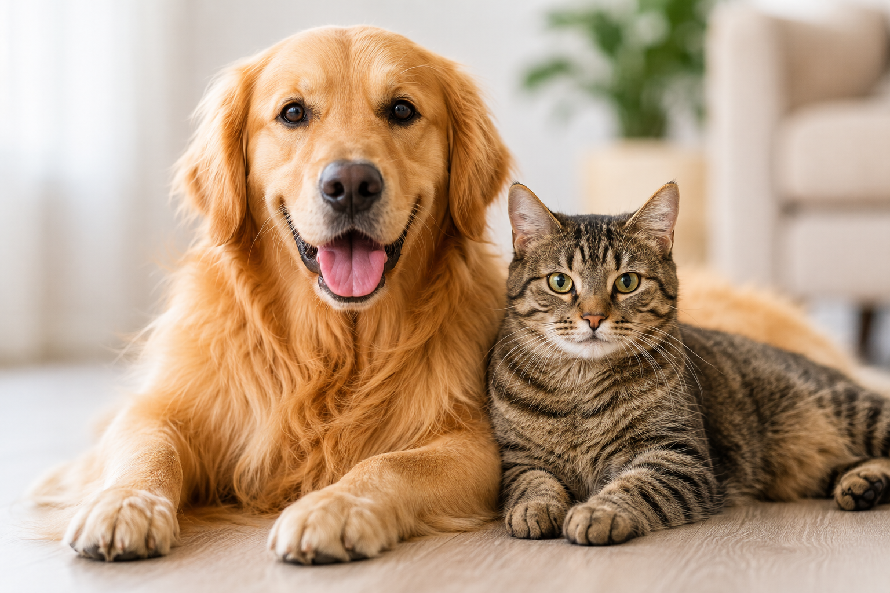
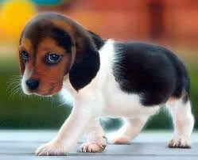

Bienvenidos a Huellas Sanas, un blog dedicado al cuidado de las mascotas
Un blog dedicado al cuidado y bienestar de perros y gatos. Aprende consejos para darles una vida saludable y llena de amor.
Conoce más
Aprende cómo cuidar a tu perro o gato según su edad.

Durante sus primeros meses de vida, los cachorros necesitan cuidados especialespara crecer fuertes y saludables.
En esta etapa los perros necesitan manteneruna rutina saludable que les permita conservarsu energía y bienestar.

Durante sus primeros meses de vida, los cachorros necesitan cuidados especialespara crecer fuertes y saludables.
✨ Somos un equipo apasionado por el bienestar animal.
En Huellas Sanas creemos que cada mascota merece amor, cuidados y una vida saludable. Por eso, creamos este espacio para compartir consejos, experiencias y recursos útiles para dueños de perros y gatos.
Brindar información confiable y práctica para ayudar a las familias a cuidar mejor de sus perros y gatos, promoviendo hábitos saludables y el amor por los animales.
Ser el blog de referencia en español sobre cuidado de mascotas, creando una comunidad comprometida con el bienestar animal.
✨ Voluntario en Huellas Sanas ✨
Desde el momento en que me uní al refugio, he sido testigo de innumerables historias de rescate y adopción que han tocado mi corazón. Me dedico a cuidar a los animales, brindándoles amor y atención mientras esperan encontrar un hogar permanente. A través de mi trabajo, he aprendido sobre la importancia de la empatía y la compasión hacia los animales, y me siento agradecido por la oportunidad de marcar una diferencia positiva en sus vidas.
🌟 Creadora de contenido
Nutrición felina
📸 Fotógrafa de mascotas
Cuidado diario
💻 Desarrollador web
Amante de perros grandes
🏃♂️ Entrenador canino
Consejos de paseos
🩺 Asesor veterinario
Salud preventiva
✍️ Editor y community manager
Historias de rescate
Puedes revisar nuestra sección de adopciones y completar el formulario correspondiente.
Compartimos información sobre perros, gatos, aves, peces y otras mascotas domésticas.
Sí, puedes contactarnos mediante el formulario y compartir fotos e información de tu mascota.
"Si tu mascota presenta una emergencia médica, contacta inmediatamente a un veterinario.
Este
blog tiene fines informativos y no reemplaza la atención profesional."